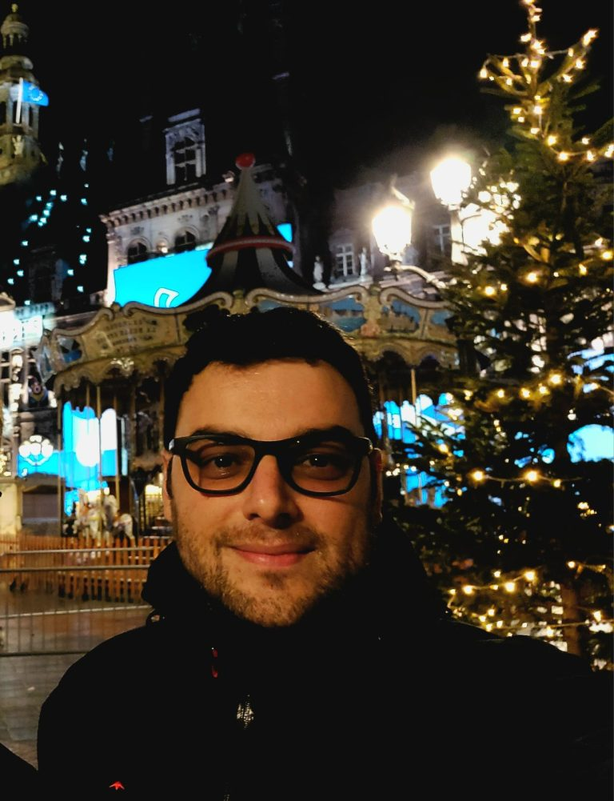

David Blanco
Research Scientist at CONICET || Professor at University of Buenos Aires
Research
I am interested in the interplay between quantum information theory, quantum field theory and gravity. In particular, I study entanglement entropy and other measures of information in quantum field theory and its applications to the AdS/CFT correspondence.
List of publications (Google Scholar)
List of publications (Inspire)
Teaching
I have taught the following undergraduate/graduate courses:
- Superconducting circuits for quantum computation
- Quantum field theory
- General relativity
- Electromagnetism and optics
- Advanced electromagnetism
- Quantum mechanics
- Classical mechanics
- Astrophysics
I also wrote an introductory set of notes for the course “Quantum field theory”.
Course notes (in Spanish, PDF)
Contact
Email: dblanco@df.uba.ar